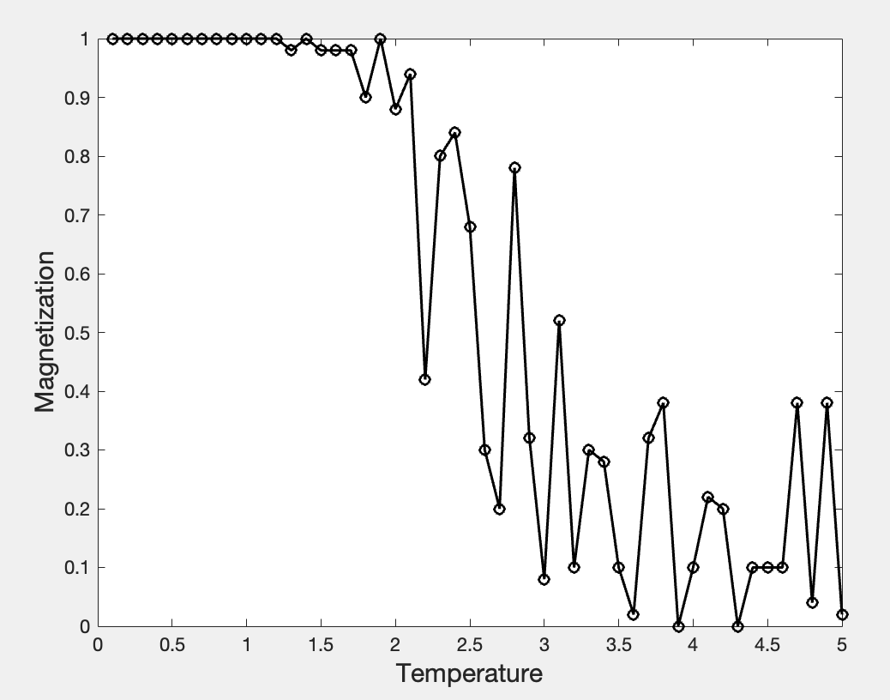

Monte Carlo Simulation of the Ising Model
1. The Ising Model
The Ising model is a lattice model proposed around 1920 by the physicists Lenz and Ising (a student of Lenz) to model magnetism. It is defined on a discrete lattice, with a spin at each lattice site that can take only the values 1 or -1, representing spin up and spin down, respectively. We consider nearest-neighbor interactions with coupling strength $J_{ij}$. Each spin is also influenced by an external magnetic field of strength $h_i$. The total Hamiltonian of the system is \begin{align} H(\sigma) = -\sum_{\langle i,j\rangle} J_{ij} \sigma_i \sigma_j - \mu \sum_j h_j \sigma_j. \label{eq1} \end{align} where $\langle i,j\rangle$ denotes nearest neighbors, $\mu$ is the magnetic moment, and $\sigma_i$ can take only the values $\pm 1$. At temperature $T$, the system does not remain permanently in its lowest-energy configuration; instead, thermal fluctuations drive transitions among different configurations. In statistical physics, the probability of observing a configuration $\sigma$ in a canonical ensemble at thermal equilibrium is \begin{align} P_{\beta}(\sigma) = e^{- \beta H(\sigma)} / Z_{\beta}. \label{eq2} \end{align} where $\beta = (k_B T)^{-1}$, and the normalization constant, or partition function, is \begin{align} Z_{\beta} = \sum_{\sigma} e^{- \beta H(\sigma)}. \label{eq3} \end{align} For a function $f$, its ensemble average is \begin{align} \braket{f}_{\beta} = \sum_{\sigma} f(\sigma) P_{\beta}(\sigma). \end{align} When $J_{ij}$ is greater than zero, the coupling is ferromagnetic; otherwise it is antiferromagnetic. For positive $h_j$, the spin at site $j$ tends to point in the positive direction, and conversely when the field is negative.
2. Monte Carlo Simulation
The central idea of Monte Carlo simulation is importance sampling. Many samples obtained by uniform random sampling contribute little useful information, while enumerating every possible state is impractical in high-dimensional problems. The Metropolis algorithm implements importance sampling through the following basic procedure:
- Choose an initial state and calculate its energy.
- Randomly flip one spin and calculate the energy after the flip.
- If the energy decreases, accept the flip; if the energy increases, accept it with probability $e^{- \beta (H' - H)}$.
- Repeat the preceding steps, stopping either when convergence is reached or after a prescribed number of iterations.
3. Code
The following MATLAB code assumes zero external field and periodic boundary conditions, with $J=k_B=1$. At each temperature, an initial thermalization segment is discarded. The measurement stage then samples at fixed intervals to calculate the absolute magnetization per site, $\langle |m|\rangle$.
clear; clc; close all
N = 16;
J = 1;
ntherm = 200 * N^2; % 200 Monte Carlo sweeps for thermalization
nmeasure = 1000 * N^2; % 1000 sweeps for measurement
sample_every = N^2; % sample once per sweep
T_sec = 0.1:0.1:5;
m_abs = zeros(size(T_sec));
aa = 1;
for T = T_sec
% Independent random initial state at each temperature
spins = 2 * (rand(N,N) > 0.5) - 1;
% Thermalization: discarded samples
for n = 1:ntherm
i = randi([1,N],1,1);
j = randi([1,N],1,1);
nn = spins(mod(i,N)+1,j) + spins(mod(i-2,N)+1,j) ...
+ spins(i,mod(j,N)+1) + spins(i,mod(j-2,N)+1);
dE = 2 * J * spins(i,j) * nn;
if dE <= 0 || rand() < exp(-dE/T)
spins(i,j) = -spins(i,j);
end
end
% Measurement and statistical average
m_sum = 0;
nsamples = 0;
for n = 1:nmeasure
i = randi([1,N],1,1);
j = randi([1,N],1,1);
nn = spins(mod(i,N)+1,j) + spins(mod(i-2,N)+1,j) ...
+ spins(i,mod(j,N)+1) + spins(i,mod(j-2,N)+1);
dE = 2 * J * spins(i,j) * nn;
if dE <= 0 || rand() < exp(-dE/T)
spins(i,j) = -spins(i,j);
end
if mod(n, sample_every) == 0
m_sum = m_sum + abs(sum(spins(:))) / N^2;
nsamples = nsamples + 1;
end
end
m_abs(aa) = m_sum / nsamples;
aa = aa + 1;
end
% plot
plot(T_sec, m_abs, 'o-', 'linewidth', 1.5, 'color', 'k')
xlabel('Temperature','FontSize',15);
ylabel('<|m|>','FontSize',15)
In the thermodynamic limit, the exact critical temperature of the two-dimensional square-lattice Ising model satisfies $T_c/J=2/\ln(1+\sqrt{2})\approx2.269$. A finite system does not exhibit a genuine nonanalytic singularity; instead, it shows a smooth, size-dependent crossover near the critical region. Determining $T_c$ accurately therefore requires a further finite-size scaling analysis.

Aside: The Partition Function and Free Energy
Once the partition function is known, the free energy $F$ can be obtained as \begin{align} F = - k_B T \ln Z_{\beta}. \label{eq4} \end{align} This relation follows directly from the definition \begin{align} F \equiv U-TS \end{align} where $U$ is the mean energy and $S$ is the entropy. We first write the Boltzmann distribution as \begin{align} p_s=\frac{e^{-\beta E_s}}{Z}. \end{align} Taking the logarithm of both sides gives \begin{align} \ln p_s = -\beta E_s - \ln Z. \end{align} Multiplying by $-k_B p_s$ and summing over all states yields \begin{align} -k_B \sum_s p_s \ln p_s = -k_B\sum_s p_s(-\beta E_s-\ln Z) = k_B\beta\sum_s p_s E_s + k_B(\ln Z)\sum_s p_s. \end{align} Noting that $\sum_s p_s E_s = U$ is the mean energy, $\sum_s p_s = 1$, and the left-hand side $-k_B \sum_s p_s \ln p_s$ is precisely the statistical-mechanical definition of entropy, we obtain \begin{align} S = k_B\beta U + k_B\ln Z. \end{align} Substituting this result into the definition $F=U-TS$ and using $\beta=1/(k_BT)$ gives \begin{align} F = U - T (k_B\beta U + k_B \ln Z) = U - T (\frac{U}{T}+k_B\ln Z ) = -k_BT \ln Z. \end{align}